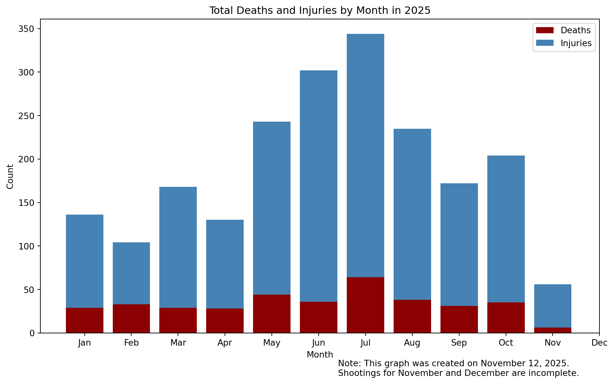
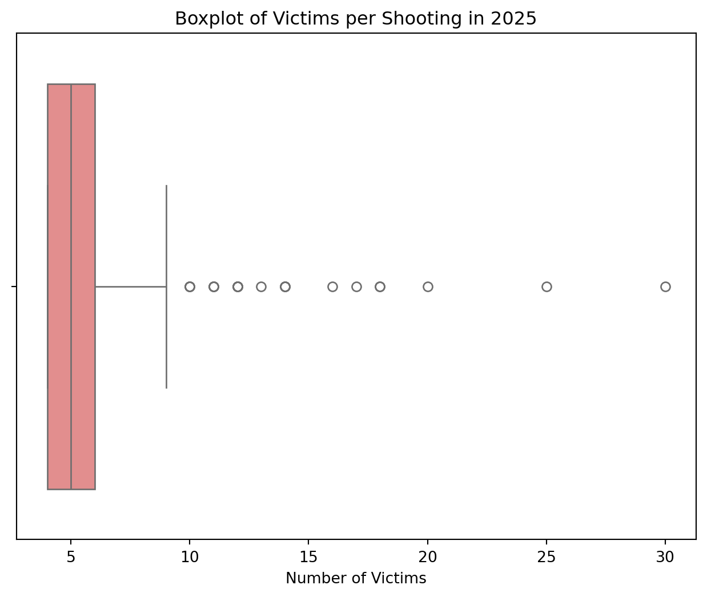
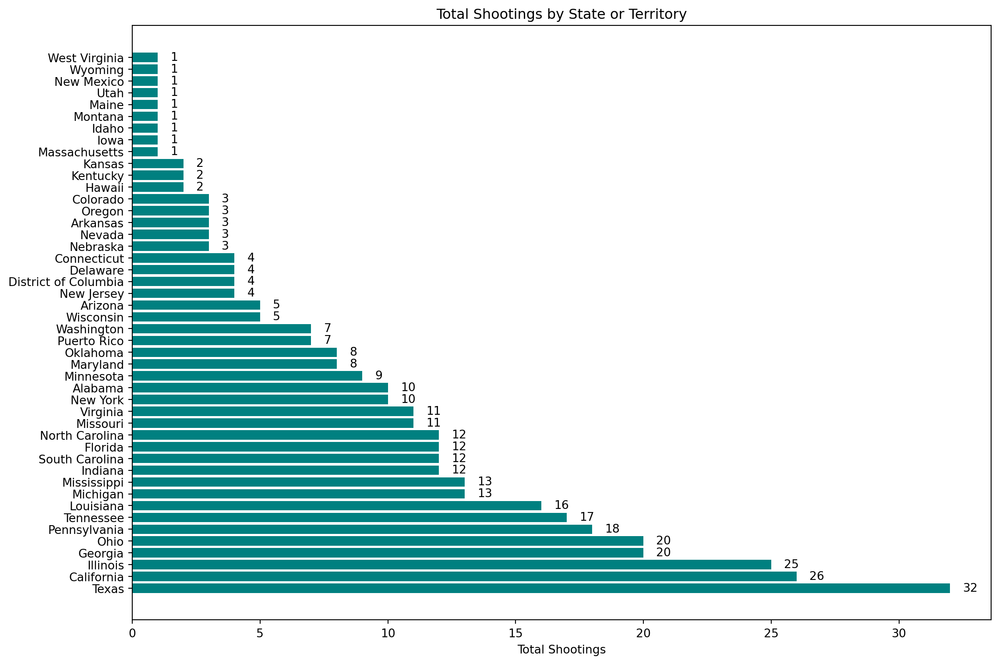

For this project I created my own dataset in which I used webscraping techniques to create a unique dataframe that I could explore. I chose to explore information on mass shootings in the United States so far in 2025. I was curious when and where shootings occurred most frequently, how many people died or were injured in mass shootings, and if there were any common characteristics between these tragic events.
I believe that if we can understand this data then we can better create policy and regulation which will serve all American residents and promote peace and safety for everyone.
I confirmed that the data I gathered from Wikipedia is publicly available and can be freely used for educational purposes. I made sure to include a user-agent in my requests and kept my scraping minimal to avoid overloading the site.
Summary of Steps
1. Find the Data
I found a Wikipedia page which included a table that had an up to date list of shootings in the United States. This table contained all the relevant information I was looking for.
2. Scrape the Data
I used the requests library to facilitate HTTP requests from Wikipedia and then pandas to manipulate and read the HTML tables. The table that I used for my analysis originally contained 385 entries and 6 variables. These variables were a combination of numeric and categorical.
3. Clean Data
The data did not contain any missing values and was already well organized, but there were still some changes I had to make.
I renamed variables for clarity.
Some of the variables, like “Location” or “Total” were confusing and could only be understood in the context of the article associated with the page. I renamed these to clearer names: “City” and “Total Victims” respectively.
Next I had to reformat the entries
The date was in the format of Month, Day (i.e. November, 12). I reformatted this to include the year and make it easier to reorder. I used for the standard format of YYYY-MM-DD.
In the original table, there were footnotes marking if the perpetrator was injured or killed or if the victim did not die during the event but died later. I created a new indicator column with perpetrator deaths and perpetrator injuries.
Reordering the Data
I reformatted the data to be chronological. The first entry is now January 1, 2025.
Description of Event
I decided to keep the column with a description of the event. Although it may not be extremely relevant during the EDA process, I know that it can have use in further analysis. However, I reordered the columns so that it was the last column.
4. Explore Data in EDA
I chose to use the libraries matplotlib and seaborn to create visuals which would help me understand the data and answer my questions. All visualizations are included in the EDA portion of this blog.
5. Draw Conclusions
In my analysis I looked for answers to my initial questions. I am happy to share my findings in the conclusion of this blog.
EDA Highlights
My EDA was very revealing regarding trends in mass shootings. I have included several categories of information that may be of interest.
Victims by Month
The plot below is a bar graph showing total victims by month with deaths shown in red and injuries shown in blue. Interestingly, the spike noted in July doesn’t correspond to a single major shooting but rather several smaller events scattered across the country. This highlights the widespread nature of the problem rather than isolated incidents.
This also potentially highlights a seasonal trend of shootings. Mass shootings seem to be higher across summer months than any other months of the year. In future reserach I am curious to see if this trend of summer shootings is common across time.
Code
import sysprint(sys.executable)import pandas as pdimport matplotlib.pyplot as pltdf = pd.read_csv("../mass_shootings_2025.csv")# Prepare datadf['Month'] = pd.to_datetime(df['Date']).dt.monthmonthly = df.groupby('Month')[['Total Deaths', 'Total Injuries']].sum().reset_index()# Plot stacked barsfig, ax = plt.subplots(figsize=(10, 6))# Plot deathsax.bar(monthly['Month'], monthly['Total Deaths'], color='DarkRed', label='Deaths')# Plot injuries on topax.bar(monthly['Month'], monthly['Total Injuries'], bottom=monthly['Total Deaths'], color='SteelBlue', label='Injuries')# Labels and titleax.set_title('Total Deaths and Injuries by Month in 2025')ax.set_xlabel('Month')ax.set_ylabel('Count')ax.set_xticks(range(1, 13))ax.set_xticklabels(['Jan','Feb','Mar','Apr','May','Jun','Jul','Aug','Sep','Oct','Nov','Dec'])ax.legend()# Note below plotplt.figtext(0.55, -0.02,"Note: This graph was created on November 12, 2025.\nShootings for November and December are incomplete.")plt.tight_layout()plt.show()
/opt/miniconda3/bin/python

Figure 1: Total Victims by Month
Distribution of Victims per Shooting
After looking at the distribution of victims by month of the year I was curious to know how many victims there are per shooting. The following boxplot highlights and median and interquartile range of the data. The data is clearly right skewed with the median falling around 5 and several outliers that range up to 30.
Code
import seaborn as snsimport pandas as pd# Load your datasetdf = pd.read_csv("../mass_shootings_2025.csv")# Compute total victims per shootingdf['Total Victims'] = df['Total Deaths'] + df['Total Injuries']plt.figure(figsize=(8,6))sns.boxplot(x=df['Total Victims'], color='lightcoral')plt.title("Boxplot of Victims per Shooting in 2025")plt.xlabel("Number of Victims")plt.show()

Figure 2: Boxplot of Distribution of Victims per Shooting
Shootings by State
I was also highly interested in if shootings were concentrated in a certain location. I used a bar chart to compare shootings by state.
Most shootings occurred in Texas, California, and Illinois. Texas, California, and Illinois are all highly populated states, so containing a high proportion of shootings seems realistic. In future research I am curious to see if states with high shootings are strongly correlated with low income states or states with little gun regulation.
Code
import pandas as pdimport matplotlib.pyplot as plt# Example: your state countsstate_counts = df['State or Territory'].value_counts().reset_index()state_counts.columns = ['State or Territory', 'Total Shootings']# Plotfig, ax = plt.subplots(figsize=(12, 8))bars = ax.barh(state_counts['State or Territory'], state_counts['Total Shootings'], color='teal')# Add numbers at the end of each barfor bar in bars: width = bar.get_width() ax.text(width +0.5, bar.get_y() + bar.get_height()/2, # x-position, y-positionf'{int(width)}', va='center', ha='left', fontsize=10)# Labels and titleax.set_xlabel('Total Shootings')ax.set_title('Total Shootings by State or Territory')plt.tight_layout()plt.show()

Figure 3: Total Shootings by US State or Territory
This EDA answers my initial questions by showing that mass shootings are spread across the U.S., with certain months and states showing higher frequency. A next step could involve comparing 2025 to prior years or exploring correlations with socioeconomic or political events.
Summary Statistics
Total Shootings: 385
Total Deaths: 375
Total Injuries: 1723
Average Victims per Shooting: 5.45
Total Percentage of Shootings with Perpetrator Deaths: 8.31%
Total Percentage of Shootings with Perpetrator Injuries: 2.60%
Conclusion
Ultimately my findings revealed several interesting points about mass shootings in the United States.
Shootings are more common in summer months, with July having the highest number of mass shootings
Shootings are highly skewed, with many small shootings and a few large shootings.
States with higher populations have a higher proportion of shootings.
I am curious how this information compares to previous years in American history, with a specific interest around major political or economic events. I am also curious how these results compare to other countries with a similar GDP and culture. Clearly there is a lot of room for future exploration.
Ultimately, I was able to answer my initial questions, develop new questions, and learn more about data acquisition and exploration through the process.
Further Information and Resources
One note I would like to make is that this blog was posted on November 12, 2025. Thus this does not include any data from November 12 to December 31 of 2025. However, I ultimately still chose to use 2025 data because I felt it was more relevant than any past data could be. The Wikipedia page cited below will continue to be updated as shooting, unfortunately, occur in the U.S. throughout the rest of the year.
The data used for this analysis can be found on this Wikipedia page on mass shootings in the United States in 2025.
You can find the Github repository containing my full analysis here if you are interested to learn more.
Source Code
---title: "Data Acquisition Project"author: "Ella Walker"date: "2025-11-12"format: html: code-fold: true toc: true---# IntroductionFor this project I created my own dataset in which I used webscraping techniques to create a unique dataframe that I could explore. I chose to explore information on mass shootings in the United States so far in 2025. I was curious when and where shootings occurred most frequently, how many people died or were injured in mass shootings, and if there were any common characteristics between these tragic events. I believe that if we can understand this data then we can better create policy and regulation which will serve all American residents and promote peace and safety for everyone.I confirmed that the data I gathered from Wikipedia is publicly available and can be freely used for educational purposes. I made sure to include a user-agent in my requests and kept my scraping minimal to avoid overloading the site.# Summary of Steps**1. Find the Data** I found a [Wikipedia page](https://en.wikipedia.org/wiki/List_of_mass_shootings_in_the_United_States_in_2025) which included a table that had an up to date list of shootings in the United States. This table contained all the relevant information I was looking for.**2. Scrape the Data** I used the requests library to facilitate HTTP requests from Wikipedia and then pandas to manipulate and read the HTML tables. The table that I used for my analysis originally contained 385 entries and 6 variables. These variables were a combination of numeric and categorical.**3. Clean Data** The data did not contain any missing values and was already well organized, but there were still some changes I had to make. a. I renamed variables for clarity. Some of the variables, like "Location" or "Total" were confusing and could only be understood in the context of the article associated with the page. I renamed these to clearer names: "City" and "Total Victims" respectively. b. Next I had to reformat the entries The date was in the format of Month, Day (i.e. November, 12). I reformatted this to include the year and make it easier to reorder. I used for the standard format of YYYY-MM-DD. In the original table, there were footnotes marking if the perpetrator was injured or killed or if the victim did not die during the event but died later. I created a new indicator column with perpetrator deaths and perpetrator injuries. c. Reordering the Data I reformatted the data to be chronological. The first entry is now January 1, 2025. d. Description of Event I decided to keep the column with a description of the event. Although it may not be extremely relevant during the EDA process, I know that it can have use in further analysis. However, I reordered the columns so that it was the last column.**4. Explore Data in EDA**I chose to use the libraries matplotlib and seaborn to create visuals which would help me understand the data and answer my questions. All visualizations are included in the EDA portion of this blog.**5. Draw Conclusions**In my analysis I looked for answers to my initial questions. I am happy to share my findings in the conclusion of this blog.# EDA HighlightsMy EDA was very revealing regarding trends in mass shootings. I have included several categories of information that may be of interest.## Victims by MonthThe plot below is a bar graph showing total victims by month with deaths shown in red and injuries shown in blue. Interestingly, the spike noted in July doesn’t correspond to a single major shooting but rather several smaller events scattered across the country. This highlights the widespread nature of the problem rather than isolated incidents.This also potentially highlights a seasonal trend of shootings. Mass shootings seem to be higher across summer months than any other months of the year. In future reserach I am curious to see if this trend of summer shootings is common across time.```{python}#| label: fig-victimsbymonth#| fig-cap: "Total Victims by Month"#| fig-width: 10#| fig-height: 6#| dpi: 150import sysprint(sys.executable)import pandas as pdimport matplotlib.pyplot as pltdf = pd.read_csv("../mass_shootings_2025.csv")# Prepare datadf['Month'] = pd.to_datetime(df['Date']).dt.monthmonthly = df.groupby('Month')[['Total Deaths', 'Total Injuries']].sum().reset_index()# Plot stacked barsfig, ax = plt.subplots(figsize=(10, 6))# Plot deathsax.bar(monthly['Month'], monthly['Total Deaths'], color='DarkRed', label='Deaths')# Plot injuries on topax.bar(monthly['Month'], monthly['Total Injuries'], bottom=monthly['Total Deaths'], color='SteelBlue', label='Injuries')# Labels and titleax.set_title('Total Deaths and Injuries by Month in 2025')ax.set_xlabel('Month')ax.set_ylabel('Count')ax.set_xticks(range(1, 13))ax.set_xticklabels(['Jan','Feb','Mar','Apr','May','Jun','Jul','Aug','Sep','Oct','Nov','Dec'])ax.legend()# Note below plotplt.figtext(0.55, -0.02,"Note: This graph was created on November 12, 2025.\nShootings for November and December are incomplete.")plt.tight_layout()plt.show()```## Distribution of Victims per ShootingAfter looking at the distribution of victims by month of the year I was curious to know how many victims there are per shooting. The following boxplot highlights and median and interquartile range of the data. The data is clearly right skewed with the median falling around 5 and several outliers that range up to 30.```{python}#| label: fig-distributionofvictims#| fig-cap: "Boxplot of Distribution of Victims per Shooting"#| fig-width: 10#| fig-height: 6#| dpi: 150import seaborn as snsimport pandas as pd# Load your datasetdf = pd.read_csv("../mass_shootings_2025.csv")# Compute total victims per shootingdf['Total Victims'] = df['Total Deaths'] + df['Total Injuries']plt.figure(figsize=(8,6))sns.boxplot(x=df['Total Victims'], color='lightcoral')plt.title("Boxplot of Victims per Shooting in 2025")plt.xlabel("Number of Victims")plt.show()```## Shootings by StateI was also highly interested in if shootings were concentrated in a certain location. I used a bar chart to compare shootings by state.Most shootings occurred in Texas, California, and Illinois. Texas, California, and Illinois are all highly populated states, so containing a high proportion of shootings seems realistic. In future research I am curious to see if states with high shootings are strongly correlated with low income states or states with little gun regulation.```{python}#| label: fig-shootingsbystate#| fig-cap: "Total Shootings by US State or Territory"#| fig-width: 10#| fig-height: 6#| dpi: 150import pandas as pdimport matplotlib.pyplot as plt# Example: your state countsstate_counts = df['State or Territory'].value_counts().reset_index()state_counts.columns = ['State or Territory', 'Total Shootings']# Plotfig, ax = plt.subplots(figsize=(12, 8))bars = ax.barh(state_counts['State or Territory'], state_counts['Total Shootings'], color='teal')# Add numbers at the end of each barfor bar in bars: width = bar.get_width() ax.text(width +0.5, bar.get_y() + bar.get_height()/2, # x-position, y-positionf'{int(width)}', va='center', ha='left', fontsize=10)# Labels and titleax.set_xlabel('Total Shootings')ax.set_title('Total Shootings by State or Territory')plt.tight_layout()plt.show()```This EDA answers my initial questions by showing that mass shootings are spread across the U.S., with certain months and states showing higher frequency. A next step could involve comparing 2025 to prior years or exploring correlations with socioeconomic or political events.# Summary Statistics- Total Shootings: 385- Total Deaths: 375- Total Injuries: 1723- Average Victims per Shooting: 5.45- Total Percentage of Shootings with Perpetrator Deaths: 8.31%- Total Percentage of Shootings with Perpetrator Injuries: 2.60%# ConclusionUltimately my findings revealed several interesting points about mass shootings in the United States.- Shootings are more common in summer months, with July having the highest number of mass shootings- Shootings are highly skewed, with many small shootings and a few large shootings.- States with higher populations have a higher proportion of shootings.I am curious how this information compares to previous years in American history, with a specific interest around major political or economic events. I am also curious how these results compare to other countries with a similar GDP and culture. Clearly there is a lot of room for future exploration.Ultimately, I was able to answer my initial questions, develop new questions, and learn more about data acquisition and exploration through the process.**Further Information and Resources**One note I would like to make is that this blog was posted on November 12, 2025. Thus this does not include any data from November 12 to December 31 of 2025. However, I ultimately still chose to use 2025 data because I felt it was more relevant than any past data could be. The Wikipedia page cited below will continue to be updated as shooting, unfortunately, occur in the U.S. throughout the rest of the year.The data used for this analysis can be found on [this](https://en.wikipedia.org/wiki/List_of_mass_shootings_in_the_United_States_in_2025) Wikipedia page on mass shootings in the United States in 2025.You can find the Github repository containing my full analysis [here](https://github.com/ella-walker/Data-Acquisition-Blog) if you are interested to learn more.